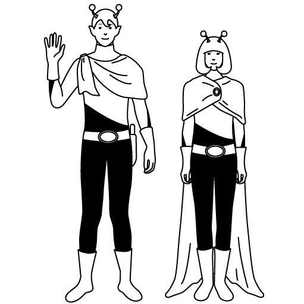

VENAQUI（ベナキー）って何？
VENAQUIとは、SNSにマイページのリンクを貼り、友達から匿名で自分の印象を投稿してもらい、その投稿に「それな！」で色々な人に共感してもらう事で自分の客観的意見を知ることができるサービスです！
SNSにリンクを貼って自分の印象を匿名で教えて貰おう！

教えてもらった印象に共感した人に「それな！」して貰おう！
※あくまで他人の意見です。強く聞き入れすぎずに、参考する程度にVENAQUIをお楽しみ下さい。